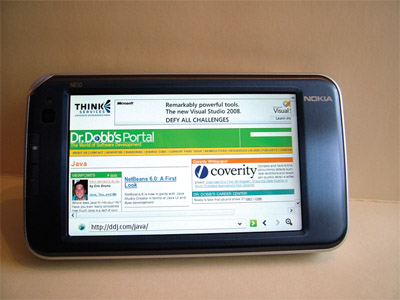
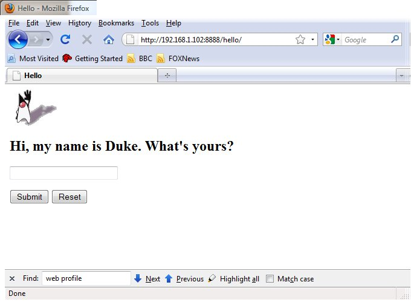
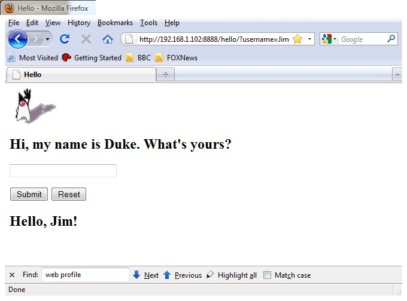

GlassFish on a Handheld
By Jim Connors 31 Dec 2009
Until now, the idea of running something akin to a Java EE
application server on a small handeld device would have been
greeted with ridicule. Suddenly that notion doesn't seem so
ridiculous when considering the recent technology that's been made
available. In particular, the following software advances make
this pipe dream more of a reality:
- Java
Standard Edition for Embedded Devices: A series of Java
virtual machines are available from Sun for many of the popular
embedded hardware/OS platforms. They are not only Java SE
compatible, but have been space optimized from a static
footprint and RAM perspective to perform in embedded
environments. To give you an idea of some of those
optimizations, read this.
- Java
Enterprise Edition 6 Platform Specification and the Web
Profile: The Java EE 6 specification allows for the
creation of a subset of the component technologies, called
"profiles". The first of these has been dubbed the Web
Profile and contains the common technologies required to create
small to medium web applications. Rather than having to
use a full blown Java EE application server in all its glory,
you can take advantage of a significantly smaller, less complex
framework.
- Embedded
GlassFish: This capability, which is now part of GlassFish
v3, enables you to run GlassFish inside your Java application,
as opposed to the other way around. Simply put, there is no need
install GlassFish or create GlassFish domains in this
scenario. Instead, you include an instance of
glassfish-embedded-web.jar in your classpath, make a few
GlassFish Embedded API calls from your standard Java
application, and voila! you've got a web application up and
running.
The Hardware
Rather than opting for one of the many embedded development
platforms around (because I'm cheap), I instead decided to
investigate what was available from a handheld perspective and see
if that environment could be adapted to suit my needs. After
some searching, it looked like the Nokia N810 just might fit the
bill. Courtesy of my buddy Eric Bruno, here's a picture of
the N810:

To get a feel for this very capable device, check out Eric's Article.
What most interested me was that (1) it has 128MB RAM, (2) a
400MHz Arm v6 processor, (3) runs a common embedded version of
Linux (maemo), (4) has a version
of Java SE Embedded (from Sun) which runs fine on this platform
and (5) can be had for a relatively affordable price on eBay.
The Operating System
The Nokia N810 is powered by the maemo
distribution, an open source platform with a thriving community of
developers. Knowing full well that any attempt to get a web
application up and running on this device would stretch its
resources to the limit, it was necessary to reclaim as much RAM as
possible before starting out. Here's a description of some
of the kludgery involved:
- You'll need to download and install some additional
applications which can be retrieved from the N810's Application
Manager program. They include: rootsh to enable root access to
the device and openssh-client
and openssh-server
to remotely access the device.
- A quick and dirty way to reclaim RAM is to shut down the
X-server and kill all of the windowing applications that run in
parallel. There are certainly more elegant ways to do this, but
in addition to being cheap, I'm lazy too. What you quickly
find out is that any attempt to manually kill off some of these
processes results in a reboot of the tablet. Why? Because
by default, the N810 includes a watchdog process that monitors
the state of the system. If it detects any irregularities,
it forces a restart.
- You can get around this problem by putting the device into
what is called "R&D" mode. This is achieved by
downloading the "flasher" utility from maemo.org and
establishing a USB connection between the N810 and your host
computer. Directions for this process can be found here.
- Once established, you can invoke the following flasher
command: flasher3.5
--set-rd-flags=no-lifeguard-reset. If this was done
successfully, you'll notice that a wrench appears on the tablet
screen when it is rebooted.
- Once in R&D mode you'll have to remotely ssh into the
device via the WiFi connection. The following script called set-headless.sh
has been provided to kill off the windowing system. After
executing this script, the N810 in effect becomes a headless
device. The only way to communicate with it is through the
network.
The Environment
Here's what was required to get the web application up and
running:
- Ssh into the device.
- Download an evaluation
copy of Java SE Embedded (ARMv6 Linux - Headless).
For this example the download file was gunzip'ed and untar'ed
into the N810 device's /usr directory resulting in a new
/usr/ejre1.6.0_10 directory.
- Download a copy of glassfish-embedded-web-3.0.jar
and place this file in the /usr/ejre1.6.0_10/lib directory.
- Modify your PATH variable to include /usr/ejre1.6.0_10/bin and
set your JAVA_HOME variable to /usr/ejre1.6.0_10
- Create a temporary directory, for this example we'll create a
/root/tmp directory.
- Compile the following Java source file, Embedded.java,
on a JDK equipped system, which is a slightly hacked version of
the original provided by Alexis
Moussine-Pouchkine.
- Create a glassfish directory under /root/tmp/ and place the
compiled Embedded.class file there
- Download the sample hello web application, hello.war,
and place it in the /root/tmp directory.
- Reclaim as much RAM as possible by running the set-headless.sh
script
- Run the web application from inside the /root/tmp directory
via the the following command-line invocation:
# java -cp /usr/ejre1.6.0_10/lib/glassfish-embedded-web-3.0.jar:. glassfish/Embedded hello.war 600
As the N810 cannot match even the most modest of laptops in terms
of performance, be prepared to wait around a little before the
application is ready. Check this output to see
what is printed out to the console during invocation.
For this run the, N810 was assigned a WiFi IP address of
192.168.1.102, thus the browser is pointed to that address with
port 8888. Here's what comes up:

And Interacting with the web app produces this:

So this is obviously not ready for prime time, but it does open
up a whole lot more possibilities in the near future.
Happy New Year!